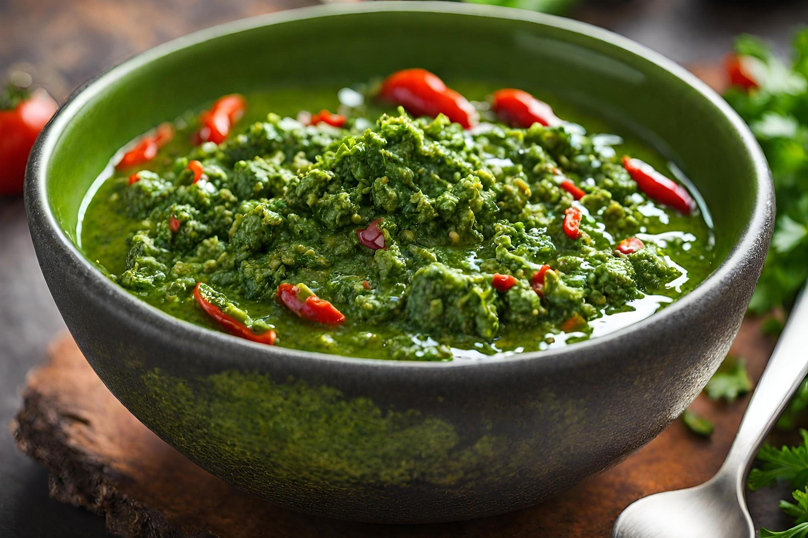

Chimichurri

Description
This Argentenian sauce is fresh, vibrant and tangy, delicious on meats such as steak.
A very simple recipe that will elevate just about any savory dish!
Ingredients
Yields 4-6 servings
- 1/2 cup extra-virgin olive oil
- 2 teaspoons course sea salt
- 4 garlic gloves, minced
- 2 tablespoons red wine vinegar
- 1/4 teaspoon dried oregano
- 2 thai red chilis
- 1/2 cup finely chopped flat-leaf parsely (about 1 bunch)/li>
Steps
- In a mortar and pestle, add sea salt, oil, and garlic. Grind until garlic becomes a smooth paste.
A food processor also works.
- Add other ingredients and stir to combine. Ideally allow to sit for at least 2 hours, and may be made ahead
of time and refrigerated for 24 hours.
-
Serve with meats such as chicken or beef. Particularly great with grilled steaks.
Home